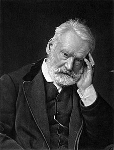

Pena di morte
INTRODUZIONE
La pena di morte veniva già usata nella preistoria dai primitivi ad esempio:
- Babilonesi:avevano scritto il codice Hammurabi e,con la legge del taglione,i ricchi pagavano mentra ai poveri veniva tagliata la mano
- Egiziani:applicavano la pena di morte contro l'adulterio.Quando una donna subiva l'accusa di adulterio veniva punita con la lapidazione
- Greci:Quando si applicava la pena di morte,il colpevole veniva ucciso dal magistrale poi gettavano il suo corpo nudo fuori dalle mura delle città
- Romani:i poveri venivano crocifissi, le sacerdotesse che perdevano la verginità venivano messe sotto terra vive e infine l'amante veniva bastonato fino alla morte
Medioevo
Nasce la santa inquisizione dove venivano applicate torture,roghi,lapidazioni e molteplici altre pene
America Latina
La pena di morte veniva applicata per l'adulterio ma non veniva uccisa la donna bensi l'amante a cui veniva lanciato un sasso in testa dal marito
Victor Hugo

E' stato uno scrittore e un poeta francese.Ha scritto diversi libri tra cui nel 1829 scrisse "L'ultimo giorno di un condannato a morte"che racconta di un prigioniero nei suoi ultimi giorni di vita poichè è stato condannato a morte nel carcere di Bicetre
Torna indietro
Vai alla storia di Alda Merini